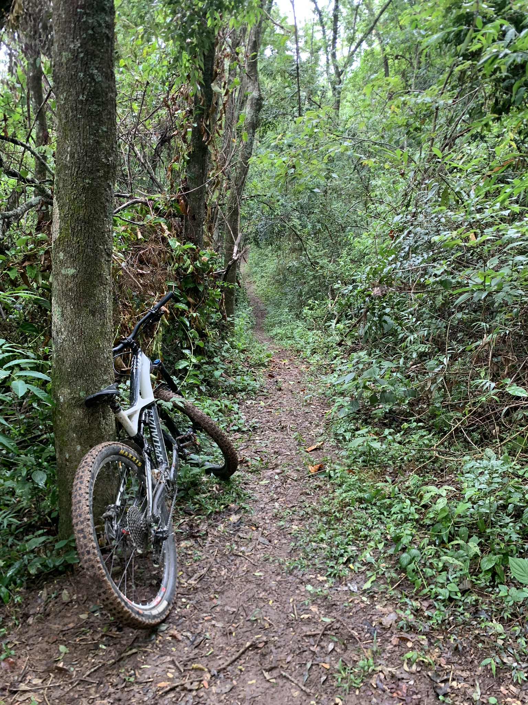
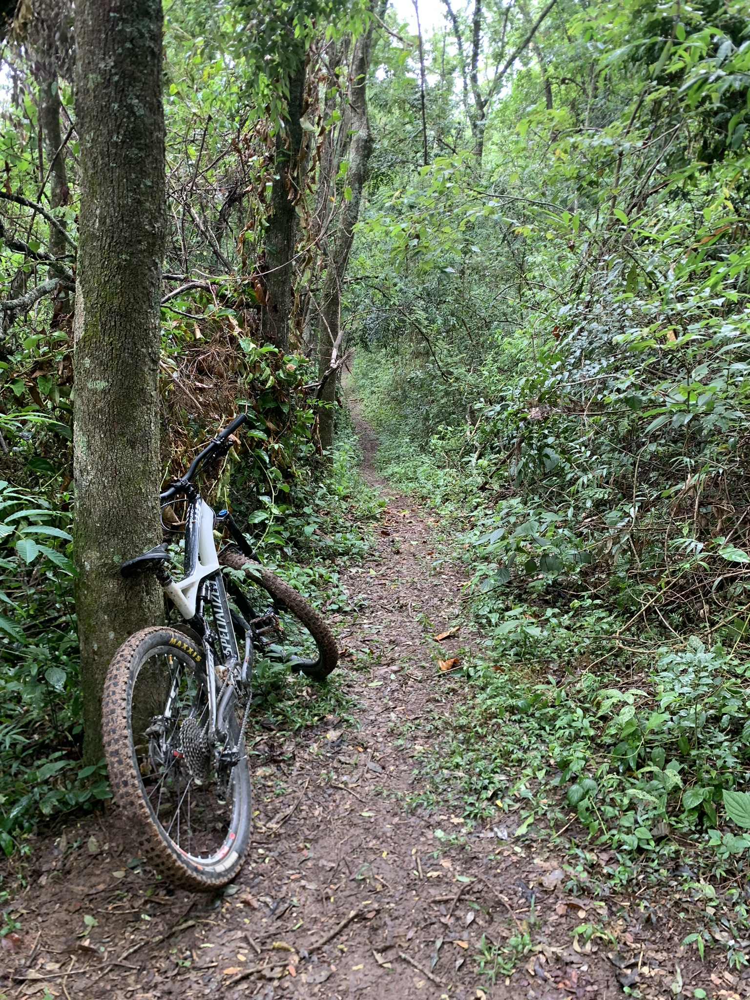

Encosta23

Quem somos
Tudo começou em 2020 quando dois amigos resolveram inovar o esporte na região por não ter um lugar para andar, e assim foi criado o que hoje e conhecido como Encosta23
Feitos do ano
Esse ano após 3 anos de muito trabalho e suor tivemos a nossa primeira corrida e foi logo a abertura do campeonato paulosta de Dh
Como chegar?
Para nos achar é facil!
Estamos localizados Estr. Mun. Cristo Redentor, 524 - Centro, Socorro - SP
Galeria

 

Lines
Rock das Aranhas
Rock das Aranhas vem pra ser uma pista desafiadora com aquela pegada do Downhill classico com poucos pulos mais muitas pedras, raises e inclinados confira:
Forfun2
Com seu DNA de freeride classico Forfun2 é uma linha rapida com varios pulos e alguns inclinados cofira o video a baixo: